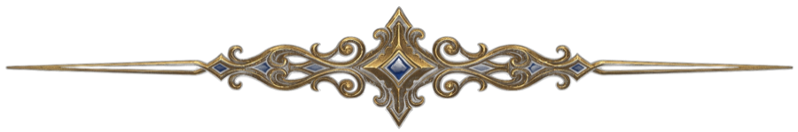

チェロの楽譜帳
Score Book
チェロの楽譜帳

記号と言葉の辞典
この楽譜帳について
- 本はやさしい順（Lv.0〜Lv.5）に並び、境目に Lv の札が立っています。Lv が上がるほどポジション移動や速い音が増えます。本をタップするとその曲が開きます。
- 音符の上の数字は指番号（0＝開放弦）、下は弦。「ドレミ」に切り替えると音名が出ます。
- ▶ で1小節数えてから鳴ります。−＋の数字で始める小節を選べ、音符や A・B をタップしてもそこから始まります。くり返しの中は「1回目／2回目」を選べます。
- ▯▯ は譜面台（ページをめくって弾く画面）。… の中に、速さを戻す・メトロノーム・くり返し・書き込み・指番号／ドレミ・パートの音量があります。
- 曲ごとの解説（弾き方の注意・出典）は、各曲のいちばん下の「解説」にあります。
- どの曲もパブリックドメインの旋律を、初心者のチェロ向けに調と音域を選び直したものです。「自分の楽譜を読み込む」で入れた曲は、この端末にだけ入ります。
- 練習表へ戻る